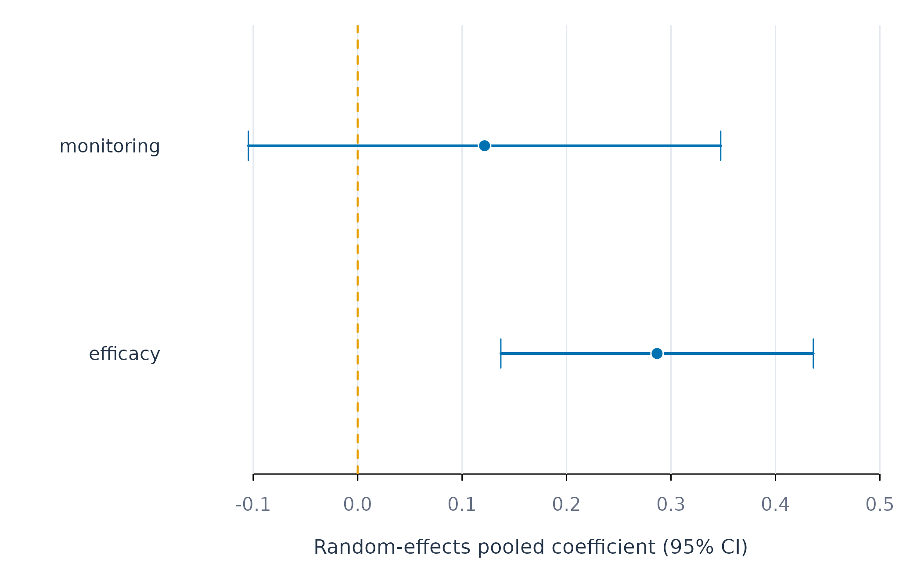
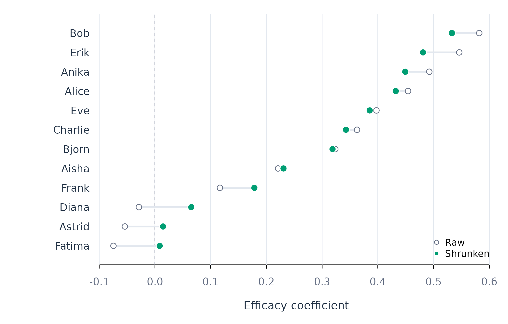

Pooling and Shrinking Person-Specific Coefficients
Source:vignettes/pooling-shrinkage.Rmd
pooling-shrinkage.RmdPerson-specific coefficients combine genuine heterogeneity with
sampling error. A learner whose true efficacy slope is 0.30 might
produce an estimate of 0.45 because of noise in a short series. Two
functions address this mixture. pool_coefs() estimates the
uncertainty-weighted average and the between-person spread of the true
coefficients. shrink_coefs() moves each person’s imprecise
estimate toward the pooled distribution, producing stabilised
coefficients that separate signal from noise more effectively than the
raw values.
| Question | Function |
|---|---|
| What is the uncertainty-weighted average of person-specific coefficients? | pool_coefs() |
| How should noisy person-specific coefficients be stabilised? | shrink_coefs() |
All examples use 12 learners from the bundled srl data,
each observed on 154 to 156 days. The individual-scope regression of
effort on efficacy and monitoring serves as the input to both
functions.
individual_fit <- fit_lm(analysis_data, y = "effort",
x = c("efficacy", "monitoring"),
id = "name", time = "day",
scope = "individual")
coefs(individual_fit, scope = "individual", n = 8)
#> scope model estimator subject subgroup term estimate std_error
#> 1 individual lm native Aisha .none (Intercept) 60.8053781 4.48242570
#> 2 individual lm native Aisha .none efficacy 0.2209651 0.08212755
#> 3 individual lm native Aisha .none monitoring 0.1495086 0.06851997
#> 4 individual lm native Alice .none (Intercept) 64.5515532 6.45537709
#> 5 individual lm native Alice .none efficacy 0.4543041 0.07660304
#> 6 individual lm native Alice .none monitoring -0.3276520 0.08001883
#> 7 individual lm native Anika .none (Intercept) 23.1867445 5.98939755
#> 8 individual lm native Anika .none efficacy 0.4923880 0.10132704
#> statistic p_value
#> 1 13.565284 4.720708e-26
#> 2 2.690512 8.143071e-03
#> 3 2.181971 3.104404e-02
#> 4 9.999656 1.589570e-17
#> 5 5.930628 2.933652e-08
#> 6 -4.094686 7.669590e-05
#> 7 3.871298 1.760110e-04
#> 8 4.859394 3.568461e-06Each learner contributes a separate slope and standard error. The standard errors reflect how precisely each slope is estimated from that learner’s series. Both pooling and shrinkage weight each learner’s contribution by these standard errors, so they require coefficient tables that carry them — linear models, generalised linear models, and within–between models qualify; machine-learning models generally do not.
pool_coefs()
Analytic question
A DerSimonian–Laird random-effects model treats each person-specific coefficient as an estimate of that person’s true value, observed with sampling error. The model estimates the uncertainty-weighted pooled coefficient, the standard deviation of the true coefficients across persons (), and the proportion of observed spread attributable to genuine between-person differences (). Each learner’s coefficient contributes according to its sampling variance, so well-measured learners receive more weight.
Pooled estimates
pooled_coefs <- pool_coefs(individual_fit)
pooled_coefs
#> POOLED PERSON EFFECTS
#> Method random effects (DerSimonian-Laird)
#> People 12
#> Terms 3
#>
#> term k pooled 95% CI sd_obs tau I2 Q p
#> --------------------------------------------------------------------------------
#> (Intercept) 12 36.1962 [21.50, 50.89] 23.591 20.102 0.912 <1e-04
#> efficacy 12 0.2867 [0.14, 0.44] 0.238 0.197 0.813 <1e-04
#> monitoring 12 0.1215 [-0.10, 0.35] 0.357 0.330 0.938 <1e-04
#>
#> sd_obs = observed spread; tau = spread of the true coefficients
#> I2 = share of the observed spread that is realThe pooled efficacy coefficient was 0.29 (95% CI: 0.14 to 0.44). The estimated was 0.20, and was 0.81 — roughly four-fifths of the observed spread among the 12 efficacy slopes reflected true between-person differences rather than sampling error. Under a normal approximation, the true slopes of 95% of learners lie between approximately $-$0.10 and 0.68.
The pooled monitoring coefficient was 0.12 (95% CI: $-$ = 0.33 and = 0.94. Although the pooled value was compatible with zero, the large indicates substantial heterogeneity: the monitoring slope varies considerably across learners, and the pooled mean does not represent a common effect.
Visualisation
shown_pool <- subset(pooled_coefs, term != "(Intercept)")
forest_plot(shown_pool$estimate, shown_pool$conf_low, shown_pool$conf_high,
shown_pool$term, xlab = "Random-effects pooled coefficient (95% CI)")
Figure 1. Random-effects pooled slopes with 95% confidence intervals. The intercept is omitted because its much larger scale would compress the predictor effects.
The pooled efficacy slope is distinguishable from zero; the monitoring interval crosses it. These are average values across learners and do not imply that any individual learner has the pooled slope. The large values confirm that pooled estimates should always be reported together with and .
Assumptions and failure checks
The DerSimonian–Laird estimator treats learners as independent and assumes that their true coefficients come from a distribution summarised by a mean and a variance. The estimator can be imprecise with few learners. and should be read alongside the number of contributing learners and , not in isolation.
At least two learners with finite, positive standard errors are required for each term. Coefficients with missing or non-positive standard errors are excluded. Pooling does not turn an associational coefficient into a causal estimate.
shrink_coefs()
Analytic question
Empirical-Bayes shrinkage stabilises each person’s coefficient by moving it toward the pooled distribution. The shrinkage weight for each learner is the ratio of the between-person variance to the sum of the between-person variance and that learner’s sampling variance. A weight near one retains most of the raw estimate; a weight near zero pulls it toward the pooled mean. Learners estimated with greater uncertainty are therefore pulled more.
Shrunken estimates
The same individual fit from the pooling section supplies the raw coefficients and standard errors.
shrunken_coefs <- shrink_coefs(individual_fit, term = "efficacy")
shrunken_coefs
#> SHRUNKEN PERSON EFFECTS
#> People 12
#> Terms 1
#>
#> subject term raw S.E. weight shrunken
#> -----------------------------------------------------------
#> Aisha efficacy 0.2210 0.0821 0.852 0.2307
#> Alice efficacy 0.4543 0.0766 0.868 0.4322
#> Anika efficacy 0.4924 0.1013 0.790 0.4493
#> Astrid efficacy -0.0540 0.0988 0.799 0.0146
#> Bjorn efficacy 0.3237 0.0778 0.865 0.3187
#> Bob efficacy 0.5820 0.0878 0.834 0.5330
#> Charlie efficacy 0.3627 0.1169 0.739 0.3428
#> Diana efficacy -0.0288 0.1282 0.702 0.0652
#> Erik efficacy 0.5462 0.1138 0.749 0.4811
#> Eve efficacy 0.3975 0.0689 0.891 0.3854
#> Fatima efficacy -0.0745 0.1075 0.770 0.0085
#> Frank efficacy 0.1166 0.1487 0.636 0.1785
#>
#> weight = how much of the person's own estimate is keptEvery efficacy slope was pulled toward the pooled mean of 0.29. The shrinkage weights ranged from 0.64 (Frank, SE = 0.15) to 0.89 (Eve, SE = 0.07). Frank’s raw slope of 0.12 moved to 0.18; Eve’s raw slope of 0.40 moved to 0.39 — a much smaller shift, because Eve’s estimate was more precise. The three learners with negative raw slopes (Fatima, Astrid, Diana) were pulled substantially toward the pooled mean, while learners whose raw slopes were already close to it moved very little.
Visualisation
shrunken_coefs <- shrink_coefs(individual_fit, term = "efficacy",
sort_by = "shrunken")
at <- seq_len(nrow(shrunken_coefs))
limits <- range(c(shrunken_coefs$estimate, shrunken_coefs$shrunken, 0))
figure_begin(c(4.2, 7, 1, 1))
plot(shrunken_coefs$shrunken, at, xlim = limits,
ylim = c(0.5, length(at) + 0.5), yaxt = "n", pch = 21,
bg = fig_col["teal"], col = "white", cex = 1.3,
xlab = "Efficacy coefficient", ylab = "")
figure_grid(x = TRUE, y = FALSE)
abline(v = 0, col = fig_col["muted"], lty = 2)
segments(shrunken_coefs$estimate, at, shrunken_coefs$shrunken, at,
col = fig_col["grid"], lwd = 2.4)
points(shrunken_coefs$estimate, at, pch = 21, bg = "white",
col = fig_col["muted"], cex = 1.05)
points(shrunken_coefs$shrunken, at, pch = 21, bg = fig_col["teal"],
col = "white", cex = 1.3)
axis(2, at = at, labels = shrunken_coefs$subject, tick = FALSE,
col.axis = fig_col["ink"])
legend("bottomright", c("Raw", "Shrunken"), pch = 21,
pt.bg = c("white", fig_col["teal"]),
col = c(fig_col["muted"], "white"), bty = "n", cex = 0.8)
Figure 2. Raw (open) and empirical-Bayes shrunken (filled) efficacy coefficients for 12 learners. Longer connecting lines indicate greater shrinkage.
Extreme raw values were drawn toward the pooled centre, and precise estimates moved less. The shrinkage pattern is visible in the connecting lines: Fatima, Astrid, and Diana (the leftmost points) have the longest lines, whereas Eve and Bjorn (near the pooled mean with small standard errors) barely moved. The weight column in the printed output quantifies how much of each learner’s own estimate was retained.
Assumptions and failure checks
Empirical-Bayes shrinkage inherits the random-effects assumptions
from pool_coefs(): independent learners and a coefficient
distribution summarised by one mean and variance. A multimodal
coefficient distribution — two groups with genuinely different slopes —
makes one pooled centre inadequate. In such cases, subgroup-specific
shrinkage would be more appropriate; test_subgroups() can
assess whether a multi-group representation is supported.
Standard errors are required; coefficients without them are excluded. The shrunken estimates are appropriate for description and stabilised prediction. Their usual intervals require additional modelling if formal person-specific inference is the goal.
Choice between the two functions
pool_coefs() addresses the population: what is the
average person-specific slope, how much do the true slopes vary, and how
much of the observed spread reflects sampling error?
shrink_coefs() addresses each person: what is a more stable
estimate of this person’s slope after accounting for imprecision?
Raw individual coefficients remain appropriate when each person has enough observations to produce estimates with small standard errors. When standard errors are large relative to the between-person spread, shrinkage moves the noisiest estimates toward the pooled mean and the improvement is greatest.
Neither function asserts that every person has the pooled effect.
fit_lm(scope = "pooled") estimates one row-level regression
— a different question from meta-analytic pooling of individual slopes.
test_subgroups() should be consulted before replacing a
continuous coefficient distribution with discrete classes.